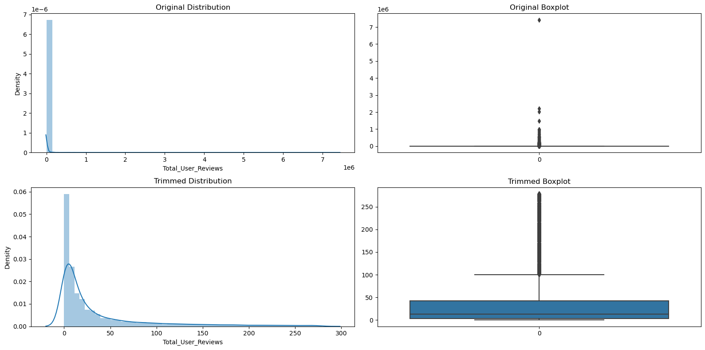
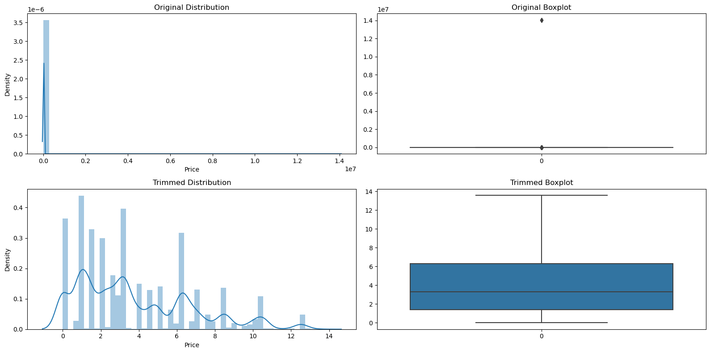
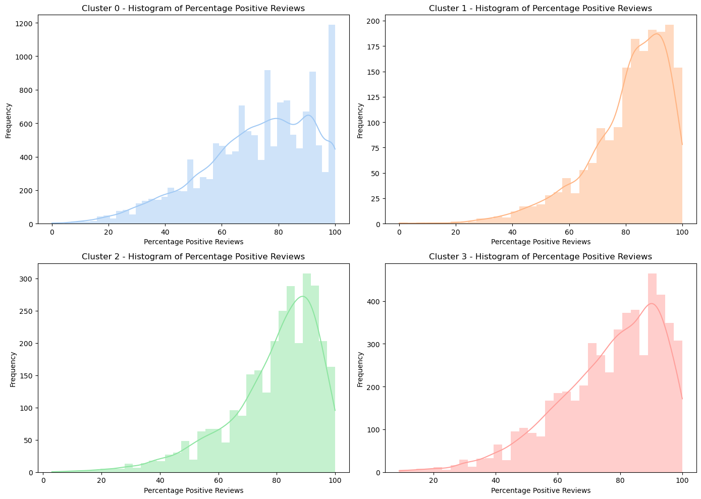

Project: Steam Game Analytics Tool
For additional technical understanding of the development, refer to the Python Notebook
Data Source and Usage
This tool uses a dataset from Steam, featuring over 83,000 games and diverse metadata like titles, publishers, genres, and release dates. The actual model and analysis has been done only on games up until 2022. IQR method was used to remove outliers for total amount of reviews and price. This resulted in the predictive model only considering games with a maximum of 279 reviews and a maximum price of 13.57 USD. The distributions of how these variables looked before and after applying IQR are shown below.

Figure 1: Distribution transformation of Total User Reviews before and after applying IQR

Figure 2: Distribution transformation of Price before and after applying IQR
Predicted Multiple Linear Regression Model
The results for the amount of predicted reviews are based on the Multiple Linear Regression trained with the data as outlined above. The evaluation metrics of the model provided essential insights, but they also highlight important limitations:
- R-squared (0.2750): Indicates that around 28% of the variance in user reviews is explained by the model, which is significant given the data's complexity as it doesn't consider any other influential variables such as marketing.
- MAPE (361.34%): Shows substantial variability in prediction errors, suggesting that predictions might have a wide range of accuracy.
- RMSE (47.68): Highlights the presence of outliers and potential large deviations in predictions.
Estimated downloads and Revenue
Estimated downloads number is calculated by multiplying the number of predicted user reviews by 35. This ratio is based on Simon Carless' analysis, stating that the estimated owners of the game based on the number of reviews is a ratio that is closer to 30 in recent years
Revenue is the estimated downloads of the game multiplied by a factor of 0.38. This number is based on Weinbaum's calculation of multiplying VAT (0.93),returns (0.92),average regional price (0.8), average discount (0.8) and platform cut (0.7).
K-Means Clustering
K-Means Clustering is used to offer deeper insights by comparing games to similar titles. This process involves determining the optimal number of clusters, then analyzing the distribution of positive reviews within each cluster. Four clusters were formed, and each hold different distributions for the percentage of positive reviews. Users can use this as a reference to where a game belongs to.
Figure 3: The four clusters a game can belong to
Considerations
When using this tool, please consider the following:
- Model Limitations: The predictions are based on historical data and might not fully capture future market trends or account for unique aspects of your game.
- Ethical Use: Rely on the tool for insights but maintain creative freedom. Avoid making decisions solely based on predictive outcomes to preserve the diversity and innovation in indie gaming.
- Complementary Tool: Use our analytics as one of many resources in your decision-making process. Balance data-driven insights with other factors like user feedback and personal judgment.